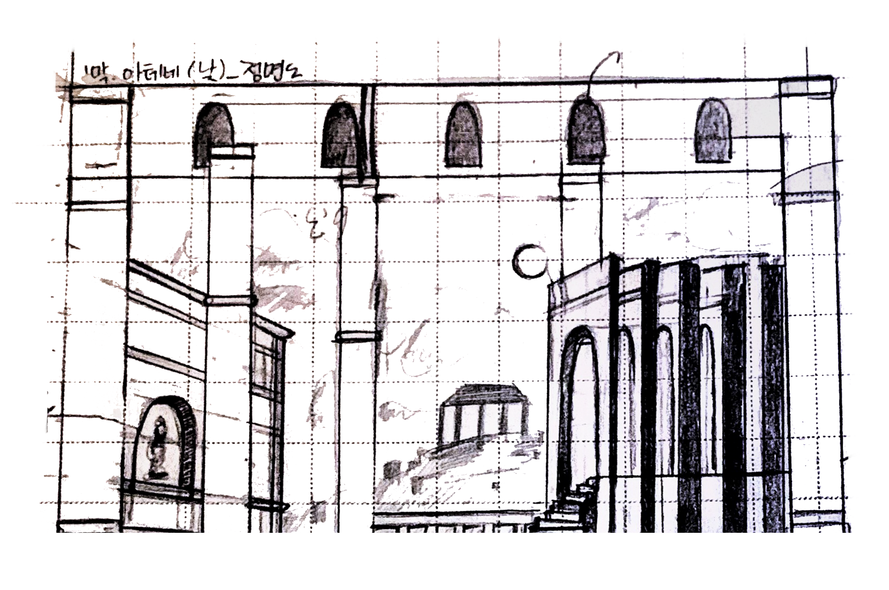
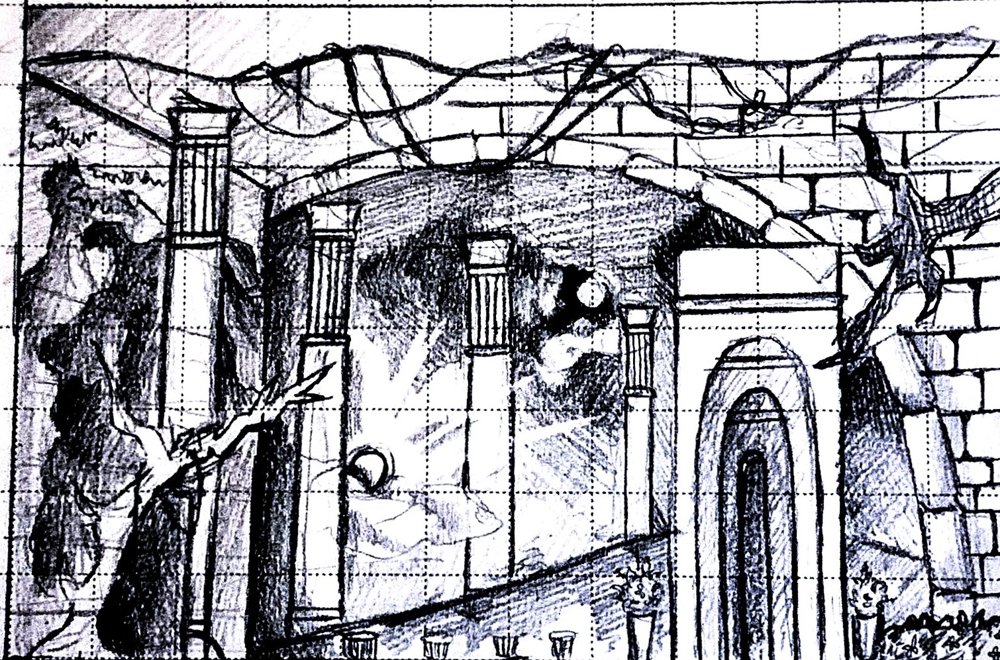

Concept Drawing
Detail Sketch


*1막 아테네의 낮*


*2막 밤의 숲*

Proscenium Stage
셰익스피어의 수많은 대표작 중 하나인 한 여름 밤의 꿈 몽환적인 요정의 숲을 배경으로 요정왕 오베론과 여왕 티타니아의 싸움에 휘말리는 연인들의 이야기를 신비롭게 풀어내고 있습니다.이와 같이 아름다운 묘사를 통해 많은 무대로 만들어 졌으며,저또한 이러한 매력에 끌려 무대로 제작해 보게 되었습니다.
당대의 발전된 도시,석조 건축물로 만들어진 아테네의 모습을 보여주고자 하였습니다.

신비로운 모습의 나무와 의자 그리고 도시의 기둥 마저도 자연으로 덮여있는 사람의 손길이 닿지 않는 요정의 숲을 생각하며 구성해 보았습니다.

결혼식 입구의 모습과 컨셉 스케치를 중심으로 어떤 의식이 진행되는 공간으로 보이기 위해 입구 주변에 둥글게 구조물을 설치했습니다.